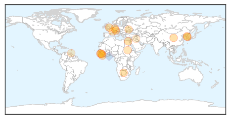
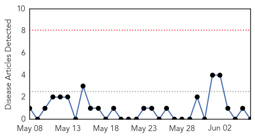

Ebola
30-Day Web Trend
0 alerts, 0 warnings

30-Day Twitter Trend
0 alerts, 0 warnings

Article Locations
Article Confidences

Top Articles:
- 1.000
- Fourth patient dies of MERS in South Korea
- 1.000
- Britain throws weight behind plans for flying-doctor unit to tackle world diseases
- 0.999
- Inside the $105 million lab that wants to wipe out MERS and Ebola
- 0.994
- Guinea extends Ebola emergency measures
- 0.993
- Guinea extends Ebola emergency measures
- 0.990
- Stopping the next pandemic today
- 0.985
- The Ebola Review, Part II
- 0.982
- This Is What Experts Say We Need To Do To Prevent Another Ebola
- 0.980
- The Courier Ohio Has Monitored About 375 Travelers Under Ebola Protocols
- 0.979
- Why isn't there a better test to detect Ebola?
- 0.973
- How Women Helped Lead the Fight Against Ebola in Liberia
- 0.881
- Health Leaders Urge the Need of Rapid Response Unit for Ebola
- 0.874
- David Cameron wants Black Death squad of top doctors in case killer epidemic returns
- 0.841
- Global health leaders call on world leaders to share the responsibility keeping the planet free from infectious outbreaks
- 0.825
- three crucial factors for health
- 0.629
- Beyond Ebola, laying foundations for Caribbean regional health security
- 0.540
- Liberia's school systems recover after Ebola outbreak
Top Tweets:
- 0.944
- Guinea extends Ebola emergency measures - Yahoo News http://t.co/U6T7KbE2Ye ebola EVD
- 0.933
- Why isn't there a better test to detect Ebola? - PBS NewsHour (blog) http://t.co/ytPDNTLimS ebola EVD
- 0.918
- Ohio has monitored about 375 travelers under Ebola protocols - Washington Times http://t.co/QReKISeXj7 ebola EVD
- 0.911
- The Ebola Review, Part I - Foreign Policy (blog) http://t.co/mYt5wrGNeU ebola EVD
- 0.888
- Zoloft, Vascor found effective against Ebola virus - http://t.co/GffD6BGkbO http://t.co/jnvR4Hx9F2 ebola EVD
- 0.835
- This week on Daybreak: Fajitas, Ebola No More and Truth and Reconciliation - CBC.ca http://t.co/EbB9ji1BYz ebola EVD
- 0.733
- Mass malaria drug administration helps in ↓ing transmission of disease in Ebola effected regions of Sierra Leone http://t.co/bTwIxCNguv
- 0.672
- Since the start of the Ebola vaccine trial in Guinea, 3,075 people have been vaccinated. EbolaResponse http://t.co/O5ZfbTJcKk
- 0.656
- Epicentre of initial Ebola outbreak in tri-border area around Guéckédou, Guinea, has not recorded a single case for over 100 days.
- 0.509
- As pertinent as ever: http://t.co/0Aa7OYZ0d4 Unilateralism does a great disservice to affected populations & global health. Ebola
Pertussis
30-Day Web Trend
0 alerts, 0 warnings

30-Day Twitter Trend
0 alerts, 0 warnings

Article Locations

Article Confidences

Top Articles:
-
No articles found for Jun 06, 2015
Top Tweets:
-
No tweets found for Jun 06, 2015